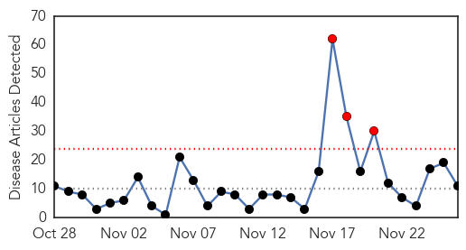
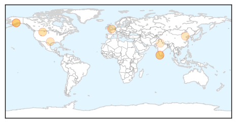
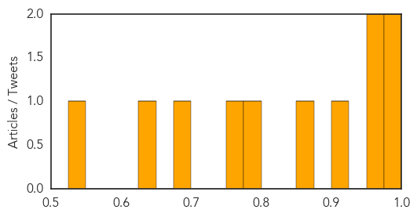

Influenza
30-Day Web Trend
3 alerts, 0 warnings

30-Day Twitter Trend
1 alerts, 0 warnings
Article Locations
Article Confidences
Top Articles:
- 0.999
- Flu, enterovirus could cast pall over Thanksgiving travel, family gatherings
- 0.982
- Juneau Empire - Alaska's Capital City Online Newspaper
- 0.963
- India orders culling after bird flu outbreaks in Kerala
- 0.962
- Flu season off to a slow start
- 0.902
- Health officials say flu season arrived early in Alaska
- 0.872
- Kerala bird flu under control
- 0.782
- Taiwan lowers H7N9-related travel alert for Beijing
- 0.770
- Turkey recall story a fake - IronMountainDailyNews.com
- 0.677
- Avian flu: Slow start for culling, govt says nothing to panic
- 0.640
- No need for concern over spread of avian flu: Chandy
- 0.538
- Thanksgiving turkey recall for bird flu infection: Truth or a hoax?
Top Tweets:
-
No tweets found for Nov 26, 2014
Bubonic Plague
30-Day Web Trend
10 alerts, 0 warnings

30-Day Twitter Trend
0 alerts, 0 warnings

Article Locations
Article Confidences

Top Articles:
Top Tweets:
-
No tweets found for Nov 26, 2014